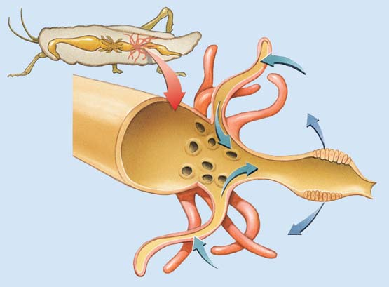

48 Osmorregulación y desecho de residuos metabólicos
1034
La mayoría de los animales terrestres habitan cerca de fuentes de agua. La cebra, el ñu y varios tipos de aves beben en un lago en el cráter Ngorongoro en Tanzania.
E
l agua, la molécula más abundante en las células y en la superfi cie de la Tierra, da forma a la vida y es un factor fundamental en la distribución de los organismos en el planeta. Así como los animales en la fotografía, la mayoría de los organismos vivos necesitan una fuente de agua confi able con la cual volver a reponer sus líquidos corporales. Es por esto que los animales suelen habitar en zonas próximas al agua. Los iones se disuelven en agua, el medio en que se lleva a cabo la mayoría de las reacciones metabólicas. El volumen y la composición de los fl uidos de un animal deben mantenerse dentro de límites homeostáticos. Por medio de la selección natural han evolucionado varios mecanismos homeostáticos que regulan el volumen y la composición de los fl uidos en el ambiente interno. Muchos animales pequeños viven en el océano y obtienen su alimento y oxígeno directamente del agua de mar que los rodea, y liberan sus desechos residuales en el agua. En animales más grandes y en la mayoría de los animales terrestres, las células están irrigadas por fl uido que sirve como un mar interno. Los animales terrestres tienen una necesidad constante de conservar el agua. La pérdida de agua del cuerpo debe ser regulada con sumo cuidado y el líquido perdido debe ser reemplazado. El agua se ingiere con los alimentos y la bebida y también es producida en reacciones metabólicas.
CONCEPTOS CLAVE
48.1 La osmorregulación es el proceso por el cual los organismos controlan la concentración de agua y sal en el cuerpo de modo que sus líquidos corporales se mantengan dentro de límites homeostáticos. 48.2 Durante el metabolismo, la mayoría de los animales produce agua, bióxido de carbono y desechos nitrogenados, que incluyen amoniaco, ácido úrico y urea. 48.3 Muchos invertebrados tienen órganos nefridios que llevan a cabo la osmorregulación y la excreción; los insectos y los arácnidos tienen túbulos de Malpighi que excretan residuos metabólicos y conservan el agua. 48.4 Los animales de agua dulce, marinos y terrestres poseen adaptaciones diferentes para la osmorregulación que afrontan los desafíos de estos ambientes diversos. 48.5 El riñón de los vertebrados mantiene el agua y el balance de electrolitos, y excreta desechos metabólicos; la nefrona es la unidad funcional del riñón de los vertebrados. Varias hormonas interactúan para regular la función renal.
McMurray Photography
Osmorregulación y desecho de residuos metabólicos 1035
La osmorregulación es el proceso por el cual los organismos controlan la concentración de agua y sal de modo que sus líquidos corporales no se vuelvan demasiado diluidos o concentrados en exceso. La excreción es el proceso de deshacerse de los residuos metabólicos del cuerpo. Han evolucionado sistemas excretores que funcionan tanto en la osmorregulación como en la eliminación de desechos metabólicos. Los sistemas excretores liberan al cuerpo del exceso de agua y iones, desechos metabólicos y sustancias dañinas. Como se analizará, las hormonas son moléculas de señalización importantes en estos procesos regulatorios.
Repaso
■ ¿Qué es la osmorregulación?
■ ¿Qué es la excreción?
48.2 PRODUCTOS DE DESECHO METABÓLICOS
OBJETIVO DE APRENDIZAJE
2 Contrastar los costos y benefi cios de excretar amoniaco, ácido úrico o urea.
Los desechos metabólicos deben ser excretados a fi n de que no se acumulen y alcancen concentraciones que puedan interrumpir la homeóstasis. Los productos de desecho metabólicos más importantes producidos por la mayoría de los animales son agua, bióxido de carbono y desechos nitrogenados , los cuales contienen nitrógeno. El bióxido de carbono es excretado principalmente por estructuras respiratorias (vea el capítulo 46). En los animales terrestres, algo de agua también se pierde en las superfi cies respiratorias. Sin embargo, órganos excretores especializados, como los riñones, eliminan y excretan la mayor parte del agua y los desechos nitrogenados. Los desechos nitrogenados incluyen amoniaco, ácido úrico y urea. Recuerde que los aminoácidos y los ácidos nucleicos contienen nitrógeno. Durante el metabolismo de los aminoácidos, el grupo amino que contiene nitrógeno es eliminado (en un proceso conocido como desaminación) y es convertido en amoniaco ( FIGURA 48-1 ). Sin embargo, el amoniaco es bastante tóxico. Algunos animales acuáticos lo excretan hacia el agua circundante antes de que se acumule en concentraciones tóxicas en sus tejidos. Algunos animales terrestres, incluidos algunos caracoles y cochinillas, lo ventilan directamente en el aire. Pero muchos animales, incluidos los humanos, convierten el amoniaco en algún desecho nitrogenado menos tóxico como ácido úrico o urea. El ácido úrico se produce a partir tanto del amoniaco como de la descomposición de nucleótidos de ácidos nucleicos. El ácido úrico es insoluble en agua y forma cristales que son excretados como una pasta cristalina, de modo que hay poca pérdida de líquido. Ésta es una adaptación importante para conservar el agua en muchos animales terrestres, incluidos insectos, algunos reptiles y aves. Asimismo, debido a que el ácido úrico no es tóxico y puede almacenarse con seguridad, su excreción es una ventaja adaptativa para especies cuyas crías comienzan su desarrollo encerradas en huevos. La urea , el desecho nitrogenado más importante de los anfi bios y mamíferos, es sintetizada en el hígado a partir de amoniaco y bióxido de carbono por una secuencia de reacciones conocida como ciclo de la urea. Así como en la formación de ácido úrico, estas reacciones requieren enzimas específi cas y la entrada de energía por parte de las células.
Dos procesos que ayudan a mantener la homeóstasis de fl uidos y electrolitos (sal) en los animales son la osmorregulación y la excreción , la eliminación de residuos metabólicos. En este capítulo se analizan esos procesos tanto en vertebrados como en invertebrados que habitan en varios entornos. Luego la atención se centra en la estructura y las funciones del riñón de los mamíferos. El capítulo termina con una descripción de las hormonas que regulan la función renal.
48.1 MANTENIMIENTO DEL BALANCE DE LÍQUIDOS Y ELECTROLITOS
OBJETIVO DE APRENDIZAJE
1 Describir cómo los procesos de osmorregulación y excreción contribuyen a la homeóstasis de electrolitos.
El fl uido intracelular , el fl uido dentro de las células, constituye casi todo el líquido del cuerpo. El fl uido extracelular , que está fuera de las células, incluye el fl uido intersticial (que se encuentra entre las células), la linfa y el plasma sanguíneo (o hemolinfa). En los vertebrados, el plasma sanguíneo, que es agua en su mayor parte, transporta principalmente nutrientes, gases, productos residuales y otros materiales en todo el cuerpo. El fl uido intersticial se forma a partir del plasma sanguíneo e irriga todas las células. El exceso de agua se evapora de la superfi cie del cuerpo o es excretado por estructuras especializadas. Los electrolitos son compuestos como sales inorgánicas, ácidos y bases que forman iones en disolución. Los electrolitos son solutos muy importantes en los fl uidos corporales. Muchos mecanismos homeostáticos regulan el balance de líquidos y electrolitos. Recuerde del capítulo 5 que la ósmosis es la difusión de agua a través de una membrana selectivamente permeable. El fl ujo neto de agua es de una disolución más diluida (que tiene menor concentración de soluto) a una disolución menos diluida (que tiene mayor concentración de soluto). Si las concentraciones de soluto de dos disoluciones son iguales, son isotónicas entre sí. Si la disolución A tiene una mayor concentración de soluto que la disolución B, entonces la disolución A es hipertónica con respecto a la disolución B. La disolución B, con una menor concentración de soluto que la disolución A, es hipotónica comparada con la disolución A. Recuerde que la concentración total de soluto de una disolución es responsable de la dirección del movimiento del agua. La presión osmótica de una disolución es la presión que debe ejercerse en el lado hipertónico de una membrana selectivamente permeable para impedir el movimiento neto de agua desde el lado hipotónico. Un osmol está relacionado con un mol (vea el capítulo 2), pero toma en consideración el número de partículas producidas cuando se disuelve un soluto. Por ejemplo, la glucosa se disuelve para proporcionar sólo un tipo de partícula, de modo que un mol de glucosa en disolución es un osmol. Un mol de NaCl en disolución produce dos tipos de partícu las (Na + y Cl − ), así que un mol de NaCl es dos osmoles. Ambos tipos de iones afectan la presión osmótica de la disolución. Un miliosmol es 1/1000 de un osmol. La osmolaridad es una medida del número de osmoles de soluto por litro de disolución. Las soluciones con la misma osmolaridad se describen como isoosmóticas . Si la disolución X tiene una osmolaridad mayor que la disolución Y, se describe como hiperosmótica . La disolución Y debe describirse como hipoosmótica con respecto a la disolución X.
1036 Capítulo 48
48.3 OSMORREGULACIÓN Y EXCRECIÓN EN INVERTEBRADOS
OBJETIVOS DE APRENDIZAJE
3 Comparar los osmoconformadores y los osmorreguladores. 4 Describir los túbulos protonefridios, metanefridios y de Malpighi , y comparar sus funciones.
El océano es un entorno estable y su concentración de sal no varía mucho. La concentración de electrolitos en las células y líquidos corporales de las esponjas marinas y los cnidarios es muy semejante al agua de mar, de modo que estos animales no requieren estructuras excretoras especializadas. No gastan energía o invierten muy poca en la excreción de residuos porque éstos simplemente se difunden hacia el exterior y son lavados por las corrientes de agua. Cuando el agua se estanca y las corrientes no lavan los residuos, los ambientes acuáticos, como los arrecifes de coral, resultan dañados por la acumulación de desechos. Los líquidos corporales de la mayoría de los invertebrados marinos están en equilibrio osmótico con el agua de mar circundante. Estos animales se conocen como osmoconformadores porque la concentración de sus líquidos corporales varía con los cambios en el agua de mar. Sin embargo, muchos animales marinos osmoconformadores continúan regulando algunos iones en sus líquidos corporales. Los hábitats costeros, como los estuarios que contienen agua salobre, son entornos mucho menos estables que el mar abierto. Las concentraciones de sal varían a menudo con las mareas cambiantes. Muchos vertebrados e invertebrados que habitan en estos entornos son osmorreguladores . Estos animales tienen mecanismos homeostáticos que mantienen una combinación salina óptima en sus tejidos sin importar los cambios en la concentración de sal en su entorno. En el ambiente de la costa, donde el agua dulce entra al océano, el agua puede tener una menor concentración de sal que la existente en los líquidos corporales de un animal. El agua se mueve osmóticamente hacia el cuerpo del animal, provocando la difusión de la sal. Un animal adaptado a este medio posee estructuras excretoras que eliminan el exceso de agua. Ciertos gusanos poliquetos y los cangrejos azules están entre los animales que pueden ser osmoconformadores u osmorreguladores, dependiendo de las condiciones del medio. La deshidratación es una amenaza constante para los animales terrestres. Debido a que la concentración de sus fl uidos es mayor que la del aire que los rodea, tienden a perder agua por evaporación tanto de las superfi cies corporales como respiratorias. Los animales terrestres también pueden perder agua cuando excretan desechos. A medida que los animales se desplazaban hacia tierra fi rme, la selección natural favoreció la evolución de estructuras y procesos que conservan agua. Los sistemas excretores ayudan a mantener la homeóstasis de líquidos y electrolitos al ajustar de manera selectiva las concentraciones de sales y otras sustancias en la sangre, y otros líquidos del cuerpo. Normalmente, un sistema excretor recolecta los líquidos, por lo regular, de la sangre o del fl uido intersticial. Luego ajusta la composición de este líquido al regresar en forma selectiva sustancias a los líquidos del cuerpo. Por último, el cuerpo libera el producto excretorio ajustado que contiene sustancias en exceso o potencialmente tóxicas.
En comparación con el costo energético de producir amoniaco, el costo de producción de la urea y el ácido úrico es alto. La urea tiene la ventaja de ser mucho menos tóxica que el amoniaco y puede acumularse en concentraciones más altas sin ocasionar daño al tejido; así, puede ser excretada en forma más concentrada. Sin embargo, debido a que la urea es altamente soluble, se disuelve en agua y para excretarla se requiere más agua que para excretar el ácido úrico.
Repaso
■ ¿Cuáles son los tipos principales de desechos nitrogenados? Proporcione ejemplos de animales que excreten cada tipo.
■ ¿Cuáles son los benefi cios de excretar desechos nitrogenados en forma de ácido úrico? ¿Y en forma de urea?
O C OH R
NH 2
C H
Desaminación
Amoniaco NH 3
Amoniaco
NH 3 H 2 N NH 2 C
O
Urea
H N
N H
C O C
C
HN
N H O C
O
C
Ácido úrico
Se requiere más energía para producir
Se requiere más agua para excretar
Ciclo de la urea 15 pasos
O C OH R
O
C
Cetoácidos Purinas
Aminoácidos Ácidos nucleicos
FIGURA 48-1 Formación de desechos nitrogenados La desaminación de los aminoácidos y el metabolismo de ácidos nucleicos producen desechos nitrogenados. El amoniaco es el primer producto metabólico de la desaminación. Muchos animales acuáticos excretan amoniaco, pero los animales terrestres lo convierten en urea y ácido úrico, que son menos tóxicos. La mayoría de los anfi bios y los mamíferos convierten el amoniaco en urea por medio del ciclo de la urea. Los insectos, muchos reptiles y aves convierten el amoniaco en ácido úrico. Se requiere energía para convertir el amoniaco en urea y ácido úrico, aunque para excretar estos desechos se necesita menos agua.
Osmorregulación y desecho de residuos metabólicos 1037
Los órganos nefridiales están especializados en la osmorregulación y/o excreción
Los órganos nefridiales , o nefridios, son estructuras que funcionan en la osmorregulación y excreción en muchos invertebrados, incluidos platelmintos, nemertinos, rotíferos, anélidos, moluscos y lanceolados. Cada órgano nefridio consta de tubos simples o bifurcados que suelen abrirse hacia el exterior del cuerpo a través de poros, denominados nefr idioporos . Dos tipos de órganos nefridios son los protonefridios y los metanefridios. En platelmintos y nemertinos, los desechos metabólicos pasan a través de la superfi cie del cuerpo por difusión, aunque estos animales poseen protonefridios ( FIGURA 48-2 ). Los protonefridios están compuestos por túbulos sin aberturas internas. Sus alargados extremos ciegos constan de células fl amígeras con cepillos de cilios, así denominados porque su movimiento constante hizo pensar a los primeros biólogos en llamas vacilantes. Estas células están en el fl uido intersticial que irriga las células del cuerpo. El fl uido entra en las células fl amígeras y la agitación de los cilios impulsa el fl uido a través de los túbulos. El exceso de fl uido sale del cuerpo a través de nefridioporos. La mayoría de los anélidos y moluscos poseen órganos nefridios más complicados denominados metanefridios ( FIGURA 48-3 ). Cada segmento de una lombriz de tierra tiene un par de metanefridios. Un metanefridio es un túbulo abierto en sus dos extremos. El ex tre mo interior se abre hacia el celoma como un embudo ciliado y el ex tre mo exterior se abre hacia afuera a través de un nefridioporo. Cada túbulo está rodeado por una red de capilares. El fluido del celoma
Células flamígeras
Red protonefrídica
Nefridioporos
Túbulo excretor
Túbulo excretor
Citoplasma
Movimiento del fluido intersticial
Cilios (“flamas”)
Núcleo
Los protonefridios de una planaria funcionan principalmente en la osmorregulación. Estos órganos forman un sistema de túbulos que se bifurcan.
El fluido intersticial entra en las células flamígeras y pasa por una serie de túbulos. El fluido en exceso sale del cuerpo a través de nefridioporos.
Una sola célula flamígera.
FIGURA 48-2 Protonefridios de un platelminto
Anterior
Intestino
Embudo
Túbulo
Posterior
Red capilar Nefridioporo Septo
FIGURA 48-3 Metanefridio de una lombriz de tierra Cada metanefridio consta de una abertura en embudo ciliada hacia el celoma, un túbulo en espiral, y una abertura de nefridioporo que se abre hacia el exterior. Esta vista interna en tres dimensiones muestra partes de tres segmentos del cuerpo de la lombriz.
1038 Capítulo 48
adaptaciones que promovieran una osmorregulación efi caz. La evolución de líquidos corporales más diluidos que el agua de mar constituyó una adaptación fundamental. Sin embargo, la concentración de sal en los líquidos corporales de estos peces sigue siendo mayor que la del agua dulce que los rodea. Son hipertónicos con respecto al entorno acuoso. Como resultado, el agua se mueve hacia el cuerpo y están en peligro constante de saturarse de agua. Los peces de agua dulce están cubiertos de escamas y una secreción mucosa que retrasa el paso de agua hacia el cuerpo. No obstante, el agua entra constantemente por las branquias y la boca (con el alimento). ¿Cómo afrontan estos animales un reto así? Algo de agua sale del cuerpo por las branquias. Además, los riñones de los peces de agua dulce están adaptados para excretar grandes cantidades de orina diluida ( FIGURA
48-5a ). Los riñones tienen glomérulos , grupos de capilares que fi ltran la sangre y producen orina. La entrada de agua es sólo una parte del reto de la osmorregulación en los peces de agua dulce. Estos animales también tienden a perder sales por difusión a través de las branquias hacia el agua circundante. Para compensar, han evolucionado células especiales en las branquias que transportan activamente sales (principalmente cloruro de sodio) del agua hacia el cuerpo. Las branquias excretan la mayoría de los desechos nitrogenados de los peces de agua dulce, aunque los riñones también son órganos excretores importantes. El desecho nitrogenado más importante es el amoniaco; alrededor de 10% de los desechos nitrogenados son excretados como urea. La mayoría de los anfi bios son por lo menos semiacuáticos y sus mecanismos de osmorregulación son semejantes a los de los peces de agua dulce. Ellos también producen grandes cantidades de orina diluida. En ésta y a través de su piel, una rana puede perder una cantidad de agua equivalente a un tercio de su propio peso en un día. El transporte activo
pasa hacia el túbulo, llevando consigo lo que contenga: glucosa, sales o desechos. A medida que el fl uido se mueve por el túbulo, materiales necesarios (como agua y glucosa) son eliminados del fl uido por el túbulo y son reabsorbidos por los capilares, dejando atrás los desechos. Es así como se produce la orina que contiene desechos concentrados.
Los túbulos de Malpighi conservan agua
El sistema excretor de los insectos y los arácnidos consta de varios cientos de túbulos de Malpighi ( FIGURA 48-4 ). Éstos son extensiones delgadas de la pared intestinal. Sus extremos ciegos están en el hemocelo (cavidad sanguínea) y son irrigados por hemolinfa. Las células de la pared del túbulo transportan activamente ácido úrico, iones de potasio y otras sustancias de la hemolinfa hacia el lumen del túbulo. Otros solutos y agua siguen por difusión. Los túbulos de Malpighi se vacían en el intestino. Agua, algunas sales y otros solutos son reabsorbidos hacia la hemolinfa por un epitelio especializado en el recto. El ácido úrico, el principal producto de desecho, es excretado como una pasta semiseca con un mínimo de pérdida de agua. Debido a que los túbulos de Malpighi conservan de manera efi caz los líquidos del cuerpo, han contribuido al éxito de los insectos en entornos terrestres.
Repaso
■ ¿En qué se parecen los órganos nefridiales y los túbulos de Malpighi? ¿En qué difi eren?
48.4 OSMORREGULACIÓN Y EXCRECIÓN EN LOS VERTEBRADOS
OBJETIVOS DE APRENDIZAJE
5 Relacionar la función del riñón de los vertebrados con el éxito de éstos en una amplia gama de hábitats. 6 Comparar las adaptaciones para la osmorregulación en peces de agua dulce, peces óseos marinos, mamíferos marinos y vertebrados terrestres.
Los vertebrados viven exitosamente en una amplia gama de hábitats: agua dulce, el océano, regiones con mareas y en la tierra, incluso en entornos extremos como los desiertos. En respuesta a los requerimientos de estos entornos diversos, han evolucionado adaptaciones para regular el contenido de sal y agua, y para excretar desechos. El órgano osmorregulador y excretor más importante en la mayoría de los vertebrados es el riñón . El riñón excreta la mayoría de los desechos nitrogenados y ayuda a mantener el equilibrio de líquidos ajustando el contenido de sal y agua en la orina. La piel, los pulmones o las branquias y el sistema digestivo también ayudan a mantener el equilibrio de líquidos y a eliminar los desechos metabólicos.
Los vertebrados de agua dulce deben deshacerse por sí mismos del exceso de agua
Cuando los peces empezaron a moverse a los hábitats de agua dulce hace alrededor de 470 millones de años, debió haber una intensa selección de
Intestino Túbulos de Malpighi
Desecho
Agua y iones necesarios
Intestino grueso Intestino medio
Recto
FIGURA 48-4 Túbulos de Malpighi de un insecto Los delgados túbulos de Malpighi tienen extremos ciegos que se extienden hacia el hemocelo. Sus células transfi eren ácido úrico y algunos iones de la hemolinfa a la cavidad del túbulo. El agua sigue por difusión. Los desechos se descargan en el intestino. El epitelio que recubre el recto (parte del intestino grueso) reabsorbe de manera activa la mayor parte del agua y iones necesarios.

Osmorregulación y desecho de residuos metabólicos 1039
chos ( FIGURA 48-6 ). La mayor parte del bióxido de carbono es excretada por los pulmones. En aves y mamíferos, algo de agua se pierde del cuerpo como vapor de agua en el aire exhalado. Aunque las glándulas sudoríparas de los humanos y algunos otros mamíferos están relacionadas principalmente con la regulación de la temperatura del cuerpo, excretan de 5% a 10% de todos los desechos metabólicos.
de sal hacia el cuerpo por medio de células especiales en la piel compensa la pérdida de sal a través de la orina y la piel.
Los vertebrados marinos deben reemplazar el líquido perdido
Los peces de agua dulce se adaptaron con bastante éxito a sus hábitats acuáticos. Así, cuando algunos de estos peces regresaron al mar hace aproximadamente 200 millones de años, sus cuerpos y líquidos corporales eran menos salados que sus alrededores; es decir, eran hipotónicos con su entorno. Estos peces pierden agua osmóticamente y toman sal. Para compensar la pérdida de líquidos, muchos peces marinos óseos beben agua de mar ( FIGURA 48-5b) . Retienen el agua y excretan sal por la acción de células especializadas en sus branquias. Las branquias son responsables de la excreción de amoniaco. Muy poca orina es excretada por los riñones, que sólo tienen glomérulos pequeños (en caso de tenerlos). Los peces marinos cartilaginosos (tiburones y rayas) poseen adaptaciones osmorregulatorias diferentes que les permiten tolerar las concentraciones de sal de su entorno. Estos animales acumulan y toleran urea ( FIGURA 48-5c ). Sus tejidos están adaptados para funcionar a concentraciones de urea que serían tóxicas para la mayoría de otros animales. La alta concentración de urea hace que los líquidos corporales sean ligeramente hipertónicos con el agua de mar, resultando en una afl uencia neta de agua. Los peces marinos cartilaginosos poseen riñones bien desarrollados que excretan un gran volumen de orina. El exceso de sal es excretado por los riñones y, en muchas especies, por una glándula rectal. Ciertos reptiles y aves marinas ingieren agua de mar y toman bastante sal en su alimento. Las glándulas en su cabeza excretan sal. Estas glándulas de sal suelen estar inactivas; funcionan sólo en respuesta a estrés osmótico. Las ballenas, los delfi nes y otros mamíferos marinos ingieren agua de mar junto con su alimento. Sus riñones producen orina concentrada, mucho más salada que el agua de mar. Ésta es una adaptación fi siológica importante, especialmente para carnívoros marinos. La dieta alta en proteínas de estos animales resulta en la producción de grandes cantidades de urea, que debe ser excretada en la orina sin perder mucha agua.
Los vertebrados terrestres deben conservar agua
Los anfi bios adultos suelen habitar en medios húmedos. Excretan urea y reabsorben algo de agua de la vejiga urinaria. Los amniotas (reptiles, aves y mamíferos) cuentan con adaptaciones más efi caces para la vida sobre la tierra. Su piel minimiza la pérdida de agua por evaporación y muchos amniotas excretan ácido úrico, lo cual requiere muy poca agua. Debido a que las aves y los mamíferos son endotérmicos (mantienen una temperatura corporal constante) y tienen una alta tasa de metabolismo, producen un volumen relativamente grande de desechos nitrogenados. Tienen numerosas adaptaciones, incluidos riñones muy efi caces, para conservar agua. Un ejemplo extremo es la rata canguro del desierto, que obtiene la mayor parte de su agua de su propio metabolismo. (Recuerde del capítulo 8 que la respiración aeróbica produce agua. Los riñones de la rata canguro son tan efi cientes que pierden poco líquido como orina). Las aves conservan agua al excretar nitrógeno como ácido úrico y por la reabsorción efectiva de agua de la cloaca y el intestino. Los mamíferos excretan urea. Sus riñones producen orina muy concentrada (hipertónica). En los vertebrados terrestres, los pulmones, la piel y el sistema digestivo son importantes en la osmorregulación y en la eliminación de dese-
Los peces tienen una variedad de adaptaciones para regular la concentración de sal y agua.
Ganancia de agua por ósmosis
No bebe agua
Riñón con glomérulos grandes
Gran volumen de orina hipotónica
Pierde sal por difusión
Toma sal por las branquias
Pérdida de agua por ósmosis
Bebe agua salada
Riñón con glomérulos pequeños o sin ellos
Pequeño volumen de orina isotónica Sal excretada por las branquias
Gana sal por difusión
Algo de agua de mar tragada con el alimento Riñón con glomérulos grandes reabsorbe la urea
Gran volumen de orina hipotónica
Glándula excretora de sal
Ganancia de agua por ósmosis
La sal se difunde por las branquias
Los peces de agua dulce viven en un medio hipotónico. El agua entra continuamente en el cuerpo y las sales se difunden. Estos peces excretan grandes cantidades de orina diluida y transportan activamente sales por las branquias.
Los peces cartilaginosos (tiburones y rayas). El riñón del tiburón reabsorbe urea en una concentración alta suficiente para que sus tejidos se vuelvan hipertónicos con el medio circundante. Como resultado, al agua entra al tiburón por ósmosis. El tiburón excreta una gran cantidad de orina diluida.
Los peces marinos viven en un medio hipertónico. Pierden agua por ósmosis. Ganan sales del agua de mar que beben y por difusión. Para compensar, el pez bebe agua, excreta la sal y produce un pequeño volumen de orina.
FIGURA 48-5 Osmorregulación en peces
PUNTO CLAVE
1040 Capítulo 48
Repaso
■ ¿Qué tipo de cambio osmorregulatorio es afrontado por los peces marinos? ¿Y por los peces de agua dulce? ¿Qué mecanismos han evolucionado para afrontar estos cambios?
■ ¿Qué adaptaciones en las aves acuáticas y mamíferos ayudan a afrontar los retos de la osmorregulación y la eliminación de desechos metabólicos? ¿Y en las aves y mamíferos terrestres?
48.5 EL SISTEMA URINARIO
OBJETIVOS DE APRENDIZAJE
7 Describir (o rotular en un diagrama) los órganos del sistema urinario de los mamíferos y proporcionar las funciones de cada uno. 8 Describir (o rotular en un diagrama) las estructuras de una nefrona (incluir los vasos sanguíneos asociados) y proporcionar las funciones de cada estructura. 9 Seguir una gota de fi ltrado desde la cápsula de Bowman hasta su liberación del cuerpo como orina. 10 Describir la regulación hormonal del balance de líquidos y electrolitos por la hormona antidiurética (HAD), el sistema renina-angiotensinaaldosterona y el péptido natriurético auricular (PNA).
El sistema urinario de los mamíferos consta de los riñones, la vejiga urinaria y conductos asociados. La estructura global del sistema urinario humano se muestra en la FIGURA 48-7 . Justo abajo del diafragma en la “parte baja de la espalda”, los riñones se ven como un par de habas gigantes de color rojo oscuro, cada una del tamaño de un puño. Cada riñón está cubierto por una cápsula de tejido conectivo ( FIGURA 48-8 ). La porción externa del riñón es la corteza renal ; la parte interna es la médula renal . La médula renal contiene de ocho a diez estructuras cónicas denominadas pirámides renales . La punta de cada pirámide es una papila renal . Cada papila tiene varios poros, las aberturas de los conductos colectores . Cuando se produce orina, ésta fl uye desde los conductos colectores por una papila renal hacia la pelvis renal , una cámara en forma de embudo. Luego, la orina circula hacia uno de los uréteres apareados, conductos que conectan cada riñón con la vejiga urinaria . Ésta es un órgano extraordinario capaz de retener (con práctica) hasta 800 mL de orina. El vaciado de la vejiga la cambia del tamaño de un melón pequeño al de una nuez. Esta hazaña es posible por el músculo liso y el epitelio especializado de la pared de la vejiga, que es capaz de contraerse y expandirse de manera excepcional. Durante la micción , la orina es liberada de la vejiga y fl uye por la uretra, un conducto que lleva al exterior del cuerpo. En los machos, la uretra es larga y pasa por el pene. El semen, así como la orina pasan por la uretra masculina. En las hembras, la uretra es corta y transporta sólo orina. Su abertura hacia el exterior está justo arriba de la abertura de la vagina. La longitud de la uretra masculina desanima invasiones bacterianas de la vejiga. Esta diferencia en longitud ayuda a explicar por qué las infecciones de la vejiga son más comunes en hembras que en machos. En resumen, la orina fl uye a través de las siguientes estructuras:
riñón (a través de la pelvis renal) ¡ uréter ¡ vejiga urinaria
¡ uretra
El hígado produce urea y ácido úrico, que son transportados por la sangre a los riñones. La mayor parte de los pigmentos biliares producidos por la descomposición de los glóbulos rojos es excretada por el hígado hacia el intestino. Del intestino pasan fuera del cuerpo con las heces.
Algo de agua se pierde por evaporación Sangre filtrada: agua reabsorbida por el riñón
Orina hipertónica
Bebe agua
HÍGADO TODAS LAS CÉLULAS
Descomposición de hemoglobina
Desechos producidos
Respiración celular
Desechos
Ácido úrico
Urea Pigmentos biliares Agua Bióxido de carbono
Órganos de excreción
RIÑÓN SISTEMA DIGESTIVO PIEL PULMONES
Aire exhalado que contiene vapor de agua y bióxido de carbono
Sudor Heces Orina Excreción
Descomposición de ácidos nucleicos
Desaminación de aminoácidos
Eliminación de desechos metabólicos en humanos y otros mamíferos terrestres. Para conservar agua, los mamíferos producen una pequeña cantidad de orina hipertónica. Los desechos nitrogenados son producidos por el hígado y transportados a los riñones. Todas las células producen bióxido de carbono y algo de agua durante la respiración celular. Estos productos residuales son excretados por los pulmones.
El riñón de los vertebrados terrestres conserva el agua al reabsorberla. Las aves y los mamíferos pueden producir orina concentrada.
FIGURA 48-6 Órganos excretores en vertebrados terrestres

Osmorregulación y desecho de residuos metabólicos 1041
Riñón derecho
Vena renal derecha
Vena cava inferior
Uretra
Orificio uretral externo
Vejiga urinaria
Uréteres izquierdo y derecho
Aorta abdominal
Riñón izquierdo
Arteria renal izquierda
Glándula suprarrenal
Orificios ureterales
FIGURA 48-7 Animada El sistema urinario humano Los riñones producen orina, que pasa por los uréteres hacia la vejiga urinaria para almacenamiento temporal. Durante la micción, la uretra conduce la orina de la vejiga al exterior del cuerpo a través de una abertura, el orifi cio uretral externo.
▲
Pirámides renales (médula)
Cápsula
Médula renal
Arteria renal
Vena renal
Pelvis renal
Uréter
Corteza renal
Médula renal
Nefrona yuxtamedular Túbulo distal contorneado Nefrona cortical
Cápsula
Túbulo proximal contorneado
Glomérulo Cápsula de Bowman
Arteria y vena
Asa de Henle
Conducto colector
Papila
Corteza renal
Estructura interna del riñón. La región exterior del riñón es la corteza; la región interior es la médula. Conforme se produce orina, fluye hacia la pelvis renal y sale del riñón a través del uréter.
Nefronas yuxtamedular y cortical. Sección longitudinal que muestra la ubicación y estructura de los dos tipos principales de nefronas. FIGURA 48-8 Animada Estructura del riñón

1042 Capítulo 48
de capilares denominado glomérulo . Tres regiones principales del túbulo renal son (1) el túbulo proximal contorneado (o simplemente túbulo proximal ), que conduce el fi ltrado (el líquido fi ltrado de la sangre) desde la cápsula de Bowman; (2) el asa de Henle , una porción en forma de horquilla; y (3) el túbulo distal contorneado (o túbulo distal ), que conduce el fi ltrado hacia el tubo colector. Así, el fi ltrado pasa por las siguientes estructuras:
cápsula de Bowman ¡ túbulo proximal contorneado ¡ asa de
Henle ¡ túbulo distal contorneado ¡ conducto colector
El riñón humano tiene dos tipos de nefronas: las nefronas corticales más numerosas (85%) y las nefronas yuxtamedulares más internas (vea la fi gura 48-8b). Las nefronas corticales tienen relativamente po-
La nefrona es la unidad funcional del riñón
La función más importante de los riñones es ayudar a mantener la homeóstasis al regular el equilibrio de líquidos y excretar desechos metabólicos. No obstante, los riñones también tienen otras funciones. Producen la enzima renina , que ayuda a regular el equilibrio de líquidos y la presión arterial (que se aborda después en el capítulo). También producen por lo menos dos hormonas: eritropoyetina , que estimula la producción de glóbulos rojos, y 1,25-dihidroxivitamina D 3 , que estimula la absorción de calcio por el intestino. Cada riñón tiene hasta un millón de unidades funcionales denominadas nefronas . Una nefrona consta de una cápsula de Bowman en forma de taza conectada a un largo túbulo renal parcialmente enrollado ( FIGURA 48-9 ). Ubicado dentro de la cápsula de Bowman hay un grupo
100 μ m
Cápsula de Bowman
Glomérulo
Arteriola eferente
Arteriola aferente
Capilares peritubulares
Túbulo distal
Túbulo distal
De la arteria renal
A la vena renal
Túbulo proximal
Asa de Henle
A la pelvis renal
Arteriola aferente
Cápsula de Bowman
Podocito
Capilares glomerulares
Arteriola aferente
Túbulo proximal
Aparato yuxtaglomerular
Arteriola eferente
Conducto colector
Túbulo distal
Ubicación y estructura básica de una nefrona. La orina se forma por la filtración de la sangre en el glomérulo y por ajuste del filtrado a medida que pasa por la serie de túbulos que drenan la cápsula de Bowman.
Micrografía de una porción de la corteza del riñón. El tejido se trató para remover algunas estructuras y para mostrar los glomérulos y los vasos sanguíneos asociados.
Vista en corte de la cápsula de Bowman. Observe que el túbulo distal es adyacente a las arteriolas aferente y eferente. El aparato yuxtaglomerular (que se analiza después en el capítulo) es un pequeño grupo de células ubicadas en las paredes del túbulo y las arteriolas.
Steve Gschmeissner/Photo Researchers, Inc.
FIGURA 48-9 Estructura de la nefrona
Osmorregulación y desecho de residuos metabólicos 1043
riales devueltos a la sangre por el túbulo renal. La sangre de los capilares peritubulares entra en pequeñas venas que al fi nal conducen a la vena renal . En resumen, la sangre circula a través del riñón en la siguiente secuencia:
arteria renal ¡ una arteriola aferente ¡ capilares de un
glomérulo ¡ una arteriola eferente ¡ capilares peritubulares
¡ venas pequeñas ¡ vena renal
La orina es producida por fi ltración, reabsorción y secreción
La orina , la descarga acuosa del sistema urinario, es producida por una combinación de tres procesos: fi ltración, reabsorción y secreción tubular ( FIGURA 48-10 ).
La fi ltración no es selectiva con respecto a iones y moléculas pequeñas
La sangre fl uye por los capilares glomerulares a gran presión, obligando a salir más de 10% del plasma de los capilares hacia la cápsula de Bowman. La fi ltración es semejante al mecanismo por el cual se forma fl uido intersticial a medida que la sangre fl uye por otras redes de capilares en el cuerpo. Sin embargo, la sangre que fl uye por los capilares glomerulares
cos glomérulos y están ubicadas casi por completo dentro de la médula cortical o externa. Las nefronas yuxtamedulares tienen glomérulos grandes y sus muy pequeñas asas de Henle se extienden muy profundamente en la médula. El asa de Henle consta de un miembro descendente que recibe el fi ltrado del túbulo proximal enrollado y un miembro ascendente , a través del cual pasa el fi ltrado en su camino al túbulo distal enrollado. Las nefronas yuxtamedulares contribuyen a la habilidad del riñón de los mamíferos para concentrar orina. La excreción de la orina que es hipertónica con respecto a los líquidos del cuerpo es un mecanismo importante para conservar agua. La sangre es entregada al hígado por la arteria renal . Pequeñas ramas de esta última dan origen a las arteriolas aferentes ( aferente signifi ca “llevar hacia”). Una arteriola aferente conduce sangre hacia los capilares que constituyen cada glomérulo. Conforme la sangre fl uye por el glomérulo, algo del plasma es forzado hacia la cápsula de Bowman. Tal vez el lector recuerde que en una ruta circulatoria típica los capilares entregan sangre a las venas. La circulación en los riñones es una excepción porque la sangre que fl uye de los capilares glomerulares pasa enseguida a una arteriola eferente . Cada arteriola eferente conduce sangre hacia afuera de un glomérulo. La arteriola eferente entrega sangre a una segunda red de capilares, los capilares peritubulares que rodean el túbulo renal. La sangre es fi ltrada a medida que fl uye por el primer conjunto de capilares, los del glomérulo. Los capilares peritubulares reciben mate-
El glomérulo fi ltra sangre. A medida que el fi ltrado se mueve por el túbulo renal su composición es ajustada por reabsorción y secreción selectivas. El fi ltrado ajustado es orina.
Cápsula de Bowman
Glomérulo
Capilares
Túbulo distal
Arteria renal
Vena renal
Asa de Henle
A la pelvis renal
Conducto colector
FILTRACIÓN
REABSORCIÓN DE H 2 O; ORINA CONCENTRADA
REABSORCIÓN Y SECRECIÓN
REABSORCIÓN Y SECRECIÓN
Túbulo proximal
FIGURA 48-10 Animada Regiones generales de fi ltración, reabsorción y secreción
PUNTO CLAVE
1044 Capítulo 48
de fi ltración retiene glóbulos, plaquetas y la mayoría de las proteínas plasmáticas. El volumen total de sangre que pasa por los riñones es de alrededor de 1200 mL por minuto, o aproximadamente la cuarta parte de todo el gasto cardiaco. A medida que el plasma pasa por el glomérulo, pierde más de 10% de su volumen hacia el fi ltrado glomerular. La tasa de fi ltración glomerular normal llega a alrededor de 180 L cada 24 horas. ¡Esto es 4.5 veces la cantidad de líquido en todo el cuerpo! El sentido común indica que la orina no puede ser excretada a ese ritmo. En pocos momentos, la deshidratación se volvería una amenaza para la vida.
La reabsorción es altamente selectiva
La amenaza a la homeóstasis planteada por las vastas cantidades de líquido fi ltrado por los riñones es evitada por la reabsorción . Los túbulos renales absorben alrededor de 99% del fi ltrado hacia la sangre, dejando sólo aproximadamente 1.5 L para su excreción como orina durante un período de 24 horas. La reabsorción permite una regulación precisa de la química de la sangre por parte de los riñones. Desechos, sales en exceso y otros materiales permanecen en el fi ltrado y son excretados en la orina, mientras que las sustancias necesarias como la glucosa y los aminoácidos son devueltas a la sangre. Cada día, los túbulos reabsorben más de 178 L de agua, 1200 g de sal y alrededor de 250 g de glucosa. La mayor parte de esto, por supuesto, es reabsorbido muchas veces. Las simples células epiteliales que revisten el túbulo renal están bien adaptadas para reabsorber materiales. Sus abundantes microvellosidades incrementan el área superfi cial para la reabsorción. Estas células epiteliales contienen numerosas mitocondrias que proporcionan la energía para activar las bombas celulares que transportan materiales de manera activa. La mayoría (alrededor de 65%) del fi ltrado es reabsorbido cuando pasa por el túbulo proximal contorneado. La glucosa, los aminoácidos, las vitaminas y otras sustancias de valor nutricional son totalmente reabsorbidos ahí. Muchos iones, incluyendo los de sodio, cloro, bicarbonato y potasio, son reabsorbidos parcialmente. Algunos de estos iones son transportados de manera activa; otros son reabsorbidos por difusión. La reabsorción continúa a medida que el fi ltrado pasa por el asa de Henle y el túbulo distal contorneado. Luego, el fi ltrado es concentrado aún más cuando pasa por el conducto colector que lleva a la pelvis renal. Las sustancias que son útiles para el cuerpo, como la glu-
lo hace a una presión mucho más alta, de modo que más plasma se fi ltra en el riñón. Varios factores contribuyen a la fi ltración. Primero, la presión hidrostática de la sangre en los capilares glomerulares es más alta que en otros capilares. Esta alta presión se debe principalmente a la gran resistencia al fl ujo de salida presentada por la arteriola eferente, cuyo diámetro es menor que el de la arteriola aferente (vea la fi gura 48-9b). Un segundo factor que contribuye a la gran cantidad de fi ltrado glomerular es la enorme área superfi cial para la fi ltración proporcionada por los capilares glomerulares bastante enroscados. Un tercer factor es la alta permeabilidad de los capilares glomerulares. Numerosos poros pequeños entre las células endoteliales que forman sus paredes hacen más permeables a los capilares glomerulares que a los capilares normales. La pared de la cápsula de Bowman en contacto con los capilares consta de células epiteliales especializadas denominadas podocitos . Éstos tienen numerosas extensiones citoplasmáticas denominadas pedicelios que cubren la mayor parte de la superfi cie de los capilares glomerulares ( FIGURA 48-11 ). Los pedicelios de podocitos adyacentes están separados por brechas angostas denominadas hendiduras de fi ltración . Las paredes porosas de los capilares glomerulares y las hendiduras de fi ltración de los podocitos forman una membrana de fi ltración que permite el paso de líquido y pequeños solutos disueltos en el plasma (incluidos glucosa, aminoácidos, sodio, potasio, cloro, bicarbonato y otras sales, y urea) y que se vuelvan parte del fi ltrado. Esta membrana
Cápsula de Bowman Glomérulo
Células sanguíneas cuyo paso está restringido
Arteriola eferente
Arteriola aferente
Glóbulo rojo
Célula endotelial de un capilar
Poros capilares
Núcleo
Podocito
Hendiduras de filtración
Pedicelios
FIGURA 48-11 Membrana de fi ltración del riñón Las paredes porosas de los capilares glomerulares y las hendiduras de fi ltración entre los podocitos forman una membrana de fi ltración que es altamente permeable al agua y las moléculas pequeñas pero restringe el paso de las células sanguíneas y las moléculas grandes.
Osmorregulación y desecho de residuos metabólicos 1045
gradiente de concentración de sal ( FIGURAS 48-12 y 48-13 ). El gradiente se usa para producir orina concentrada. Cuando el fi ltrado fl uye de la cápsula de Bowman al tubo proximal, su osmolaridad es la misma que la de la sangre (alrededor de 300 mOsm/L). El agua y la sal son reabsorbidas desde el túbulo proximal. Los iones de sodio son transportados activamente fuera del túbulo proximal y el cloro continúa pasivamente. A medida que la sal pasa hacia el fl uido intersticial, el agua sigue osmóticamente. Las paredes del miembro descendente del asa de Henle son relativamente permeables al agua, pero relativamente impermeables al sodio y la urea. El fl uido intersticial tiene una alta concentración de Na + , de modo que cuando el fi ltrado pasa por el asa de Henle, el agua sale por ósmosis. Este proceso concentra el fi ltrado dentro del asa de Henle. El asa de Henle está especializada en concentrar en alto grado el cloruro de sodio en el fl uido intersticial de la médula. Mantiene un fl uido intersticial muy hipertónico en la médula cerca de la base del asa, lo que a su vez permite que los riñones produzcan orina concentrada. En la vuelta del asa de Henle, las paredes se vuelven más permeables a la sal y menos permeables al agua. Cuando el fi ltrado concentrado empieza a moverse por el miembro ascendente (la región delgada), la sal se difunde hacia el fl uido intersticial. Esto contribuye a la alta concentración de sal del fl uido intersticial en la médula que rodea el asa de Henle. Más allá a lo largo del miembro ascendente (la región gruesa), el sodio es transportado activamente fuera del túbulo. Debido a que el agua sale del miembro descendente del asa de Henle, el fi ltrado en la parte inferior del asa tiene una alta concentración de sal. Sin embargo, ya que la sal (pero no el agua) es eliminada en el miembro ascendente, para el momento en que el fi ltrado se mueve hacia el túbulo distal, su osmolaridad puede ser igual e inclusive menor que la de la sangre. A medida que el fi ltrado pasa por el túbulo distal, puede volverse aún más diluido. El túbulo distal es relativamente impermeable al agua pero transporta sal de manera activa hacia el fl uido intersticial. El fi ltrado pasa del túbulo renal hacia un conducto colector más grande que termina por vaciarse hacia la pelvis renal. Observe el contrafl ujo del líquido a través de los dos miembros del asa de Henle. El fi ltrado que pasa hacia abajo por el miembro descendente fl uye en dirección opuesta a la del fi ltrado que se mueve hacia arriba por el miembro ascendente. El fi ltrado se vuelve concentrado conforme se mueve por el miembro descendente y diluido cuando sube por el miembro ascendente. Este mecanismo de contracorriente ayuda a mantener una alta concentración de sal en el fl uido intersticial de la médula. El fl uido intersticial hipertónico extrae el agua osmóticamente del fi ltrado hacia los conductos colectores. Los conductos colectores medulares interiores son permeables a la urea, por lo que algo de la urea concentrada en el fi ltrado puede salir y difundirse hacia el fl uido intersticial. La urea contribuye a la alta concentración de soluto de la médula interior. Este proceso ayuda a concentrar la orina. Los conductos colectores pasan por la zona de fl uido intersticial muy salado. A medida que el fi ltrado se mueve por el conducto colector, el agua pasa osmóticamente hacia el fl uido intersticial. El exceso de fl uido intersticial entra continuamente en los capilares y se vuelve parte de la sangre. Sufi ciente agua puede salir de los conductos colectores para producir una orina altamente concentrada. La orina hipertónica conserva el agua. Parte del agua que se difunde del fi ltrado hacia el fl uido intersticial es eliminada por los vasos rectos , que son largos capilares rectos que se extienden de las arteriolas eferentes a las nefronas yuxtamedulares. Los vasos rectos se extienden profundamente en la médula, sólo para
cosa o los aminoácidos, normalmente son reabsorbidos de los túbulos renales. Sin embargo, si la concentración de una sustancia particular en la sangre es alta, los túbulos pueden no ser capaces de reabsorberla toda. La tasa máxima a la que una sustancia puede ser reabsorbida es el máximo transporte tubular (MTT) . Cuando se alcanza esta tasa, los sitios de enlace están saturados en las proteínas de la membrana que transportan la sustancia. Por ejemplo, la carga tubular de glucosa es de aproximadamente 125 mg por minuto, y normalmente casi toda es reabsorbida. Sin embargo, en una persona con diabetes mellitus sin controlar, la concentración de glucosa en la sangre excede su MTT (la concentración de glucosa sobrepasa los 320 mg por minuto). El exceso de glucosa no puede ser reabsorbido y es excretado en la orina (glucosuria), un síntoma de la diabetes (que se analiza en el capítulo 49).
Algunas sustancias son secretadas activamente de la sangre hacia el fi ltrado
La secreción tubular es el traspaso selectivo de sustancias de la sangre en los capilares peritubulares hacia el túbulo renal. Observe que en la secreción tubular los iones y otras sustancias son movidos a través del epitelio del túbulo en dirección opuesta a la de la reabsorción. Potasio, iones de hidrógeno y iones de amonio, así como algunos iones orgánicos como creatinina (un desecho metabólico), son secretados hacia el fi ltrado. Ciertos medicamentos, como la penicilina, también son eliminados de la sangre por secreción. Esta última ocurre principalmente en la región del túbulo distal contorneado. La secreción de iones de hidrógeno por los conductos colectores es un mecanismo homeostático importante para regular el pH de la sangre. El bióxido de carbono, que se difunde de la sangre hacia las células de los túbulos distales y los conductos colectores, se combina con agua para producir ácido carbónico. Luego, este ácido se disocia para formar iones de hidrógeno y iones de bicarbonato. Cuando la sangre se vuelve demasiado ácida, los conductos colectores secretan más iones de hidrógeno hacia la orina.
CO 2 + H 2 O Δ H 2 CO 3 Δ H + + HCO 3 −
La secreción de iones de potasio constituye otro mecanismo homeostático importante. Cuando la concentración de K + es demasiado elevada, los pulsos nerviosos no son transmitidos efectivamente y la intensidad de la contracción muscular disminuye. El ritmo cardiaco se vuelve irregular y puede ocurrir paro cardiaco. Cuando la concentración de K + excede su nivel homeostático, los iones K + son excretados de la sangre hacia los túbulos renales y luego son excretados en la orina. La secreción resulta parcialmente de un efecto directo del K + sobre los túbulos. Además, la corteza suprarrenal (una región de la glándula suprarrenal) incrementa su producción de la hormona aldosterona, lo cual estimula aún más la secreción de K + .
La orina se vuelve concentrada a medida que pasa por el túbulo renal
Es posible sobrevivir con una ingesta limitada de líquidos porque los riñones son capaces de producir orina altamente concentrada –más de cuatro veces la concentración de la sangre—. La osmolaridad de la sangre humana es de alrededor de 300 miliosmoles por litro (mOsm/L). Los riñones pueden producir orina con una osmolaridad aproximada de 1200 mOsm/L. Conforme el fi ltrado pasa por varias regiones del túbulo renal, la sal (NaCl) es reabsorbida hacia el fl uido intersticial y se establece un
1046 Capítulo 48
Las hormonas regulan la función del riñón
Los riñones mantienen el volumen del líquido y la concentración de electrolitos del cuerpo. Así mismo ayudan a mantener la concentración de Na + y K + en la sangre dentro de límites estrechos y también regulan el pH de la sangre. El sistema endocrino regula estas funciones homeostáticas de los riñones. Entre las hormonas involucradas se incluyen: hormona antidiurética (HAD), aldosterona, angiotensina II y péptido natriurético auricular (PNA) ( TABLA 48-1 ).
La HAD incrementa la absorción de agua
La cantidad de orina producida depende de la necesidad corporal de retener el agua o deshacerse de ella. Cuando la ingesta de líquido es baja, el cuerpo empieza a deshidratarse y el volumen sanguíneo decrece. A medida que esto ocurre, la concentración de sales disueltas en la sangre se vuelve más grande, provocando un incremento en la presión osmótica. Ciertos receptores en el hipotálamo son sensibles a este cambio osmótico. Envían señales al lóbulo posterior de la glándula pituitaria para que libere hormona antidiurética (HAD) . Esta hormona es producida en realidad en el hipotálamo, pero es almacenada en la pituitaria posterior y liberada según se necesita. Un centro de la sed en el hipotálamo también responde a la deshidratación, estimulando un incremento en la ingesta de fl uidos. La HAD hace que los conductos colectores sean más permeables al agua, de modo que se reabsorbe más agua. Como resultado, se produce un pequeño volumen de orina concentrada ( FIGURA 48-14 ). La HAD actúa sobre la acuaporina-2, una proteína de membrana que forma canales de agua cerrados en la pared de los conductos colectores (vea el capítulo 5). Estos canales permiten que el agua pase rápidamente a través de la membrana plasmática. Cuando se toma un gran volumen de agua, la sangre se vuelve diluida y su presión osmótica desciende. La liberación de HAD por la glándula pituitaria decrece, disminuyendo la cantidad de agua reabsorbida de los conductos colectores. Los riñones producen un gran volumen de orina diluida.
pasar una curva en forma de horquilla y regresar al drenaje venoso cortical del riñón. Estos capilares son semejantes a los túbulos renales. La sangre fl uye en direcciones opuestas en las regiones ascendente y descendente de los vasos rectos, así como el fi ltrado circula en direcciones opuestas en los miembros ascendente y descendente del asa de Henle. Como consecuencia de este fl ujo a contracorriente, mucho de la sal y la urea que entran en la sangre a través de la región descendente de los vasos rectos sale otra vez por la región ascendente. Como resultado, la concentración de soluto de la sangre que sale de los vasos rectos es sólo ligeramente superior a la de la sangre que entra. Este mecanismo ayuda a mantener la alta concentración de soluto del fl uido intersticial en la médula renal.
La orina consta de agua, desechos nitrogenados y sales
Para cuando el fi ltrado llega a la pelvis renal, su composición ha sido ajustada con precisión. El fi ltrado ajustado, denominado orina , consiste aproximadamente de 96% de agua, 2.5% de desechos nitrogenados (principalmente urea), 1.5% de sales y trazas de otras sustancias, como pigmentos biliares, que pueden contribuir al color y olor característicos. La orina sana es estéril y ha sido usada para lavar heridas en el campo de batalla cuando no hay agua limpia. Sin embargo, cuando la orina es expuesta a la acción bacteriana, se descompone rápidamente para formar amoniaco y otros productos. El amoniaco produce el sarpullido por el uso del pañal en los infantes. La composición de la orina proporciona muchas pistas sobre el buen o mal funcionamiento del cuerpo. El análisis de orina , el examen físico, químico y microscópico de la orina, es una importante herramienta de diagnóstico que ha sido utilizada para supervisar la diabetes mellitus y muchos otros trastornos. El análisis de orina también se usa bastante en pruebas de medicamentos porque los productos de su descomposición pueden ser identifi cados en la orina durante varios días o semanas después de haberlos tomado.
Túbulo proximal Cápsula de Bowman Túbulo distal
Conducto colector
Miembro descendente Miembro ascendente
Asa de Henle
Arteriola aferente
Arteriola eferente
Filtrado
NaCl
NaCl NaCl
NaCl
NaCl
H 2 O
H 2 O
H 2 O
H 2 O
H 2 O
Urea
CORTEZA
MÉDULA
FIGURA 48-12 Animada Movimiento de agua, iones y urea a través del túbulo renal y el conducto colector El agua sale del miembro descendente del asa de Henle dejando dentro un fi ltrado más concentrado. El contorno grueso a lo largo del miembro ascendente indica que esta región es relativamente impermeable al agua. El NaCl se difunde hacia afuera desde la parte inferior ( delgada ) del miembro ascendente. En la parte superior ( más ancha ) del miembro ascendente, el NaCl es transportado activamente hacia el fl uido intersticial. Cuanto más salado se vuelva el fl uido intersticial, más agua sale del miembro descendente. Este proceso deja dentro un fi ltrado concentrado, por lo que sale más sal. Observe que éste es un sistema de retroalimentación positiva. Algo de urea sale hacia el fl uido intersticial a través de los conductos colectores. El agua de estos últimos sale osmóticamente hacia el fl uido intersticial hipertónico y es llevado lejos por los capilares.
▲
Osmorregulación y desecho de residuos metabólicos 1047
La vía renina-angiotensina-aldosterona incrementa la reabsorción de sodio
El sodio es el ion extracelular más abundante, representa alrededor de 90% de todos los iones positivos en el fl uido extracelular. Varias hormonas trabajan juntas para regular la concentración de sodio. La aldosterona , que es secretada por la corteza de las glándulas suprarrenales, estimula los túbulos distales y conductos colectores para incrementar la reabsorción del sodio. Cuando los investigadores eliminan las glándulas suprarrenales de animales experimentales, excretan demasiado sodio, conduciendo a un agotamiento grave del fl uido extracelular.
En el trastorno diabetes insípida (no confundir con el trastorno más común diabetes mellitus) la glándula pituitaria funciona mal y no libera sufi ciente HAD. La diabetes insípida también puede desarrollarse a partir del desarrollo de una insensibilidad del riñón a la HAD. En la diabetes insípida el agua no es reabsorbida de manera efi ciente de los conductos, de modo que el cuerpo produce un gran volumen de orina. Una persona con diabetes insípida grave puede excretar hasta 24 litros de orina cada día, lo cual es una pérdida importante de agua. La persona afectada se deshidrata y debe beber casi de manera continua para compensar la pérdida de líquido. Para tratar la diabetes insípida se usa una hormona sintética (desmopresina).
Túbulo proximal Cápsula de Bowman Túbulo distal
Conducto colector
Asa de Henle
Arteriola aferente
Arteriola eferente Filtrado
CORTEZA
MÉDULA
300 300
300
400 200
100 300 300
400 400
600 600
100 100
200
600
1200 1200 1200
600
400
Fluido intersticial
FIGURA 48-13 Concentración del fi ltrado a medida que se mueve a través de la nefrona La fi gura muestra la concentración relativa de iones, principalmente Na + y Cl − , durante la formación de una orina muy concentrada. Los números indican la concentración de sal en el fi ltrado y el fl uido intersticial expresados en miliosmoles por litro. Mientras más hipertónica es una disolución, más alta es la presión osmótica. El fl uido intersticial muy hipertónico cerca de la pelvis renal extrae agua osmóticamente del fi ltrado en los conductos colectores. El contorno grueso a lo largo del miembro ascendente indica que esta región es relativamente impermeable al agua.
▲
Regulación endocrina de la función de los riñones
Factores que estimulan Hormona Fuente Tejido objetivo Acciones la liberación
Hormona Producida por el hipotálamo, Conductos colectores Incrementa la permeabilidad de La baja ingesta de líquidos disminuye antidiurética (HAD) liberada por la glándula los conductos colectores, lo cual el volumen sanguíneo e incrementa pituitaria posterior aumenta la reabsorción y dismila presión osmótica de la sangre, nuye la excreción de agua receptores en el hipotálamo estimulan la pituitaria posterior
Aldosterona Glándulas suprarrenales Túbulos distales y Incrementa la reabsorción del sodio, Angiotensina II, disminución de la (corteza) conductos colectores lo cual aumenta la presión arterial presión arterial
Angiotensina II Producida a partir de Vasos sanguíneos y Constriñe los vasos sanguíneos, El decremento en la presión arterial angiotensina I glándulas suprarrenales lo cual aumenta la presión arterial; provoca la secreción de renina, la estimula la secreción de aldosrenina cataliza la conversión de terona, estimula la sed angiotensina en angiotensina I, la cual luego es transformada en angiotensina II por ECA
Péptido natriurético Aurícula del corazón Arteriolas aferentes, Dilata las arteriolas aferentes, El estiramiento de la aurícula debido auricular conductos colectores inhibe la reabsorción de sodio a un aumento en el volumen por los conductos colectores, de la sangre inhibe la secreción de aldosterona, disminuye la presión arterial
TABLA 48-1
1048 Capítulo 48
La angiotensina II incrementa la síntesis y liberación de aldosterona. Además, la angiotensina II eleva la presión arterial directamente al constreñir los vasos sanguíneos, estimula a la pituitaria para que libere HAD e incita la sed. Estas acciones ayudan a incrementar el volumen del fl uido extracelular, lo cual eleva la presión arterial. En personas con hipertensión, algunas veces se usan inhibidores de ECA para bloquear la producción de angiotensina II. La vía renina-angiotensina-aldosterona se puede resumir como sigue:
el volumen sanguíneo disminuye ¡ la presión arterial decrece ¡
las células del aparato yuxtaglomerular secretan renina ¡ la renina
cataliza la conversión de angiotensina en angiotensina I ¡
la HAD cataliza la conversión de angiotensina I en angiotensina II ¡
la angiotensina II constriñe los vasos sanguíneos y estimula la secreción
de aldosterona ¡ la aldosterona incrementa la reabsorción de
sodio ¡ la presión arterial aumenta
El péptido natriurético auricular inhibe la reabsorción de sodio
El péptido natriurético auricular (PNA) , una hormona producida por el corazón, incrementa la excreción de sodio y disminuye la presión arterial. El PNA se almacena en gránulos en las células del músculo auricular. Cuando la concentración de Na + aumenta, los fl uidos son retenidos y el volumen sanguíneo aumenta. Las células del músculo auricular se estiran y responden al liberar PNA hacia la circulación. El PNA dilata arteriolas aferentes, incrementando así la tasa de fi ltración glomerular. Esta hormona inhibe directamente la reabsorción de sodio por los conductos colectores y también de manera indirecta al inhibir la secreción de aldosterona. El PNA también reduce la concentración plasmática de aldosterona al inhibir la liberación de renina. Estas acciones del PNA incrementan la secreción de sodio y la salida de orina, lo cual disminuye el volumen sanguíneo y la presión arterial. Observe que la vía renina-angiotensina-aldosterona y el PNA trabajan de manera antagónica en la regulación del balance de líquidos y electrolitos, y de la presión arterial.
el volumen sanguíneo aumenta ¡ la presión arterial sube ¡ la
aurícula del corazón se estira ¡ la aurícula libera PNA ¡ inhibe
directamente la reabsorción de sodio y la secreción de aldosterona (lo
cual también inhibe la reabsorción de sodio) ¡ mayor volumen de
orina ¡ el volumen sanguíneo disminuye ¡ la presión arterial
disminuye
Repaso
■ ¿Cuál(es) estructura(s) está(n) asociada(s) con cada uno de los siguientes procesos?: (1) formación de urea; (2) formación de orina; (3) almacenamiento temporal de orina; (4) conducción de orina fuera del cuerpo.
■ ¿Cuál(es) parte(s) de la nefrona está(n) asociada(s) con los siguientes procesos?: (1) fi ltración; (2) reabsorción; (3) secreción.
■ ¿Por qué secuencia de estructuras pasa una gota de filtrado a medida que se mueve de la cápsula de Bowman a la vesícula urinaria?
■ ¿Por qué secuencia de vasos sanguíneos pasa una gota de filtrado a medida que es conducida hacia una nefrona y después de que sale de ésta?
■ ¿Cómo regula el riñón la composición de la sangre?
■ ¿Cuáles son las acciones de la vía renina-angiotensina-aldosterona?
La secreción de aldosterona es estimulada tanto por hormonas como por un decremento en la presión arterial (ocasionado por una disminución en el volumen de la sangre y del fl uido intersticial). Cuando la presión arterial baja, las células del aparato yuxtaglomerular secretan la enzima renina , que activa la vía renina-angiotensina-aldosterona . El aparato yuxtaglomerular es un pequeño grupo de células en la región donde el túbulo renal entra en contacto con las arteriolas aferentes y eferentes (vea la fi gura 48-9b). La renina convierte la proteína plasmática angiotensinógeno en angiotensina I. La enzima convertidora de angiotensina ( ECA ) convierte la angiotensina I en su forma activa, angiotensina II , que es una hormona peptídica. La angiotensina II estimula la secreción de aldosterona. La ECA es producida por las células endoteliales en las paredes de los capilares pulmonares.
La hormona HAD incrementa la reabsorción de agua, lo cual disminuye el volumen de orina.
Receptores en el hipotálamo
Pituitaria posterior
Conducto colector
Nefrona
Riñón
H 2 O
H 2 O
H 2 O
H 2 O
H 2 O H 2 O
La ingesta de líquido es baja.
Menor volumen de orina
El volumen sanguíneo disminuye y la presión osmótica aumenta.
7 Se inhibe la secreción de HAD.
1
2
4
5
6 3 La pituitaria posterior secreta HAD.
Los conductos colectores se vuelven más permeables.
Aumenta la reabsorción de agua.
El volumen sanguíneo aumenta y la presión osmótica disminuye.
FIGURA 48-14 Regulación del volumen de orina por la hormona antidiurética (HAD) Cuando el cuerpo se deshidrata, la hormona HAD incrementa la permeabilidad de los conductos conductores al agua. Se reabsorbe más agua y sólo se produce un pequeño volumen de orina concentrada.
PUNTO CLAVE
Osmorregulación y desecho de residuos metabólicos 1049
■ Los peces marinos óseos toman agua osmóticamente. Lo compensan al beber agua marina y excretar sal por sus branquias; producen sólo un pequeño volumen de orina isotónica. Los tiburones y otros peces marinos cartilaginosos retienen grandes cantidades de urea, lo cual les permite tomar agua osmóticamente por las branquias. Excretan un gran volumen de orina hipotónica. Los mamíferos marinos ingieren agua de mar con su alimento. Producen orina concentrada.
■ Los vertebrados terrestres deben conservar el agua. Los endotermos tienen una tasa metabólica alta y producen un mayor volumen de desechos nitrogenados. Cuentan con numerosas adaptaciones para conservar el agua, incluidos riñones efi caces.
48.5 (página 1040)
7 Describir (o rotular en un diagrama) los órganos del sistema urinario de los mamíferos y proporcionar las funciones de cada uno.
■ El sistema urinario es el sistema excretorio más importante en los humanos y otros mamíferos. En los mamíferos, los riñones producen orina, que pasa por los uréteres a la vejiga urinaria para su almacenamiento. Durante la micción, la orina es liberada del cuerpo a través de la uretra .
■ La porción exterior de cada riñón es la corteza renal ; la porción interior es la médula renal . La médula renal contiene de ocho a diez pirámides renales . La punta de cada pirámide es una papila renal . Conforme se produce orina, fl uye hacia los conductos colectores , que la vacían a través de una papila renal hacia una cámara en forma de embudo, la pelvis renal . Cada riñón tiene más de un millón de unidades funcionales denominadas nefronas .
Aprenda más sobre el sistema urinario humano y la estructura del riñón al hacer clic en las fi guras en CengageNOW.
8 Describir (o rotular en un diagrama) las estructuras de una nefrona (incluir los vasos sanguíneos asociados) y proporcionar las funciones de cada estructura.
■ Cada nefrona consta de un grupo de capilares denominado glomérulo, el cual está rodeado por una cápsula de Bowman que se abre hacia un largo túbulo renal en espiral. El túbulo renal consta de un túbulo proximal contorneado , el asa de Henle y un túbulo distal contorneado .
■ Las nefronas corticales , ubicadas casi por completo dentro de la corteza o médula exterior, tienen pequeños glomérulos. Las nefronas yuxtamedulares tienen glomérulos grandes y largas asas de Henle que se extienden profundamente hacia la médula. Estas nefronas son importantes en la concentración de orina.
■ La sangre fl uye desde pequeñas ramas de la arteria renal a arteriolas aferentes y luego a capilares glomerulares. Luego, la sangre circula hacia una arteriola eferente que la entrega en un segundo conjunto de capilares, los capilares peritubulares que rodean el túbulo renal. La sangre sale del riñón por la vena renal . 9 Seguir una gota de fi ltrado desde la cápsula de Bowman hasta su liberación del cuerpo como orina.
■ La orina es producida por fi ltración de plasma, reabsorción de materiales necesarios y secreción de unas cuantas sustancias, como iones de potasio e hidrógeno, hacia el túbulo renal.
48.1 (página 1035)
1 Describir cómo los procesos de osmorregulación y excreción contribuyen a la homeóstasis de electrolitos.
■ La osmorregulación es la regulación activa de la presión osmótica de los líquidos corporales, de manera que se mantenga la homeóstasis de fl uidos y electrolitos. La excreción es el proceso de deshacerse de desechos metabólicos del cuerpo.
48.2 (página 1035)
2 Contrastar los costos y benefi cios de excretar amoniaco, ácido úrico o urea.
■ Los principales productos de desecho del metabolismo animal son agua, bióxido de carbono y desechos nitrogenados , que incluyen amoniaco, ácido úrico y urea. El amoniaco es tóxico y es excretado principalmente por animales acuáticos.
■ El ácido úrico y la urea son mucho menos tóxicos que el amoniaco, pero su síntesis requiere energía. El ácido úrico puede ser excretado como una pasta semisólida, una adaptación para conservar agua. La excreción de urea requiere agua.
48.3 (página 1036)
3 Comparar los osmoconformadores y los osmorreguladores.
■ La mayoría de los invertebrados marinos son osmoconformadores ; es decir, la concentración de sal de sus fl uidos corporales varía con los cambios en el agua marina. Algunos invertebrados marinos, especialmente los que viven en hábitats costeros, son osmorreguladores que mantienen una concentración de sal óptima a pesar de los cambios en la salinidad de sus alrededores. 4 Describir los túbulos protonefridios, metanefridios y de Malpighi, y comparar sus funciones.
■ Los órganos nefridios ayudan a mantener la homeóstasis al reducir la concentración de líquidos del cuerpo por osmorregulación y excreción de desechos metabólicos. Los protonefridios , órganos nefridios encontrados en platelmintos, son túbulos sin aberturas internas. El fl uido intersticial entra en sus extremos ciegos, que constan de células fl amígeras, las cuales tienen cepillos de cilios. Los cilios impulsan el fl uido a través de los túbulos; el exceso de fl uido sale por los nefridioporos.
■ La mayoría de los anélidos y moluscos tienen órganos nefridios denominados metanefridios , que son túbulos abiertos por ambos extremos. A medida que el fl uido en el celoma se mueve por el túbulo, los materiales necesarios son reabsorbidos por capilares. La orina, que contiene desechos, sale del cuerpo por los nefridioporos.
■ Los túbulos de Malpighi , extensiones de la pared intestinal del insecto, tienen extremos ciegos que están en el hemocelo. Las células del túbulo transportan activamente ácido úrico y algunas otras sustancias de la hemolinfa hacia el túbulo, y el agua sigue por difusión. El contenido del túbulo pasa hacia el intestino. El agua y algunos solutos son reabsorbidos en el recto. Los túbulos de Malpighi conservan efectivamente el agua y han contribuido al éxito de los insectos como animales terrestres.
48.4 (página 1038)
5 Relacionar la función del riñón de los vertebrados con el éxito de éstos en una amplia gama de hábitats.
■ El riñón de los vertebrados excreta desechos nitrogenados y ayuda a mantener el balance de líquidos al ajustar el contenido de sal y agua en la orina. Los hábitats de agua dulce, marinos y terrestres presentan diferentes problemas para mantener el balance de líquidos internos y para la excreción de desechos nitrogenados. La estructura y la función del riñón vertebrado se han adaptado para afrontar los diversos retos osmóticos presentados por estos hábitats diferentes. 6 Comparar las adaptaciones para la osmorregulación en peces de agua dulce, peces óseos marinos, mamíferos marinos y vertebrados terrestres.
■ Los peces de agua dulce toman agua osmóticamente; excretan un gran volumen de orina hipotónica.
■ ■ RESUMEN: ENFOQUE EN LOS OBJETIVOS DE APRENDIZAJE
1050 Capítulo 48
■ Algo del agua que se difunde del fi ltrado hacia el fl uido intersticial es eliminada por los vasos rectos, un sistema de capilares que se extiende desde las arteriolas eferentes.
■ La orina es una disolución acuosa de desechos nitrogenados, exceso de sales y otras sustancias que no son necesarias para el cuerpo.
Observe los procesos renales en acción al hacer clic en las fi guras en CengageNOW.
10 Describir la regulación hormonal del balance de líquidos y electrolitos por la hormona antidiurética (HAD), el sistema renina-angiotensina-aldosterona y el péptido natriurético auricular (PNA).
■ Cuando el cuerpo necesita conservar agua, la glándula pituitaria posterior incrementa su liberación de hormona antidiurética (HAD) . La glándula pituitaria responde a un incremento en la concentración osmótica de la sangre (provocada por la deshidratación). La ADH aumenta la permeabilidad de los conductos colectores al agua. Como resultado, se reabsorbe más agua y sólo se produce un pequeño volumen de orina.
■ La vía renina-angiotensina-aldosterona y el péptido natriurético atrial trabajan de manera antagónica. Cuando la presión arterial disminuye, las células del aparato yuxtaglomerular secretan la enzima renina , que activa una vía que conduce a la producción de angiotensina II . Esta hormona estimula la liberación de aldosterona. La aldosterona incrementa la reabsorción de sodio y la angiotensina II constriñe las arteriolas; ambas acciones incrementan la presión arterial.
■ Cuando la presión arterial sube, el péptido natriurético auricular (PNA) incrementa la excreción de sodio e inhibe la secreción de aldosterona. Estas acciones incrementan la salida de orina y disminuyen la presión arterial.
■ El plasma se fi ltra través de los capilares glomerulares hacia la cápsula de Bowman. Las paredes permeables de los capilares y rendijas de fi ltración entre los podocitos , células epiteliales especializadas que constituyen la pared interna de la cápsula de Bowman, sirven como membrana de fi ltración . La fi ltración es no selectiva con respecto a moléculas pequeñas; la glucosa y otros materiales necesarios, así como desechos metabólicos se vuelven parte del fi ltrado.
■ Alrededor de 99% del fi ltrado es reabsorbido de los túbulos renales hacia la sangre. La reabsorción es un proceso muy selectivo que devuelve materiales utilizables a la sangre, pero deja desechos y excesos de otras sustancias para su excreción por la orina. La tasa máxima a la que una sustancia puede ser reabsorbida es el transporte tubular máximo (Tm) .
■ En la secreción, los iones de hidrógeno, otros iones y algunos medicamentos son transportados activamente por el túbulo renal para volverse parte de la orina.
■ La producción de orina concentrada depende de una alta concentración de sal y urea en el fl uido intersticial de la médula del riñón. El fl uido intersticial en la médula tiene un gradiente de concentración en el que la sal está más concentrada alrededor de la parte inferior del asa de Henle. El gradiente se mantiene, en parte, por la reabsorción de sal desde varias partes de túbulo renal. Un contrafl ujo de líquido a través de los dos miembros del asa de Henle concentra el fi ltrado a medida que éste se mueve por el miembro descendente y se diluye cuando se mueve por el miembro ascendente.
■ El agua es extraída del fi ltrado por ósmosis conforme pasa a través de los conductos colectores. Este proceso concentra la orina en los conductos colectores
El proceso que mantiene la homeóstasis de los líquidos corporales al evitar que éstos se vuelvan demasiado diluidos o demasiado concentrados es la (a) excreción (b) eliminación (c) osmorregulación (d) fi ltración glomerular (e) secreción tubular
¿Cuál de los siguientes pares no es correcto? (a) protonefridios; platelminto (b) metanefridios; anélido (c) célula fl amígera, platelminto (d) túbulo de Malpighi, molusco (e) riñón, vertebrado
Para compensar la pérdida de líquidos, muchos peces marinos óseos (a) acumulan urea (b) tienen glándulas que excretan glucosa (c) consumen una dieta baja en proteínas (d) excretan un gran volumen de orina hipertónica (e) beben agua de mar
Ordene las siguientes estructuras en la secuencia precisa por la que pasa la orina. 1. uretra 2. vejiga urinaria 3. riñón 4. uréter (a) 4, 3, 2, 1 (b) 3, 4, 2, 1 (c) 1, 2, 3, 4 (d) 4, 2, 1, 3 (e) 3, 1, 2, 4
Ordene las siguientes estructuras en la secuencia precisa por la que pasa el fi ltrado. 1. túbulo proximal contorneado 2. asa de Henle 3. conducto colector 4. túbulo distal cont orneado 5. cápsula de Bowman (a) 5, 4, 3, 2, 1 (b) 3, 4, 2, 5, 1 (c) 1, 5, 2, 3, 4 (d) 5, 4, 2, 3, 1 (e) 5, 1, 2, 4, 3
La arteriola aferente entrega sangre a (a) la arteria renal (b) la arteriola eferente (c) la vena renal (d) los capilares del glomérulo (e) los capilares peritubulares
¿Cuál de las siguientes no contribuye al proceso de fi ltración? (a) transporte activo por células epiteliales que revisten los túbulos renales (b) una gran área superfi cial para la fi ltración (c) permeabilidad de los capilares glomerulares (d) alta presión arterial hidrostática en los capilares glomerulares (e) podocitos
El máximo transporte tubular (Tm) es (a) la concentración máxima de una sustancia en el plasma que puede ser reabsorbida por el riñón (b) la tasa más rápida a la que es posible transportar la orina por el uréter (c) la tasa máxima a la que una sustancia puede ser reabsorbida del fi ltrado en los túbulos renales (d) la tasa máxima a la que una sustancia puede pasar por el asa de Henle e) la tasa máxima a la que una sustancia puede ser secretada en el fi ltrado
¿Cuál de las siguientes no contribuye a la alta concentración de sal en el fl uido intersticial en la médula del riñón? (a) transporte activo de sodio desde la parte superior del miembro ascendente (b) difusión de sal desde el miembro ascendente del asa de Henle (c) reabsor ción de sal de varias regiones de la cápsula de Bowman (d) contra-
EVALÚE SU COMPRENSIÓN
Osmorregulación y desecho de residuos metabólicos 1051
fl ujo de fl uido por los dos miembros del asa de Henle (e) difusión de urea fuera del conducto colector
¿Cuál de las siguientes afi rmaciones no es verdadera sobre la ADH? (a) es liberada por el lóbulo posterior de la glándula pituitaria (b) incrementa la absorción de agua (c) su secreción aumenta cuando se incrementa la presión osmótica en el cuerpo (d) aumenta el volumen de orina (e) su secreción disminuye cuando se bebe mucha agua
La aldosterona (a) es liberada por la glándula pituitaria posterior (b) disminuye la reabsorción de sodio (c) su secreción es estimulada por un incremento en la presión arterial (d) es una enzima que convierte la angiotensina en angiotensina II (e) su secreción aumenta en respuesta a la angiotensina II
Rotule el diagrama. Use la fi gura 48-9a para comprobar sus respuestas.
¿Por qué la glucosa no suele estar presente en la orina? ¿Por qué está presente en la orina de personas con diabetes mellitus? ¿Cree que las personas con diabetes mellitus experimentan un incremento en la salida de orina?
¿Qué tipos de desafíos osmorregulatorios experimentan los humanos? Explique. ¿Qué mecanismos se tienen para afrontar estos desafíos?
VÍNCULO CON LA EVOLUCIÓN. El número de protonefridios en una planaria está relacionado con la salinidad de su entorno. Las planarias que habitan agua ligeramente salada desarrollan menos protonefridios, pero el número se incrementa rápidamente cuando la concentración de sal en el entorno es menor. ¿Cómo es adaptativo este hecho? Explique.
VÍNCULO CON LA EVOLUCIÓN. La dieta de la rata canguro consta de semillas secas y no bebe agua. ¿Qué tipos de adaptaciones osmorregulatorias le podrían ayudar a sobrevivir?
VÍNCULO CON LA EVOLUCIÓN. Aunque básicamente el riñón es semejante en todos los vertebrados, su estructura y función va-
rían algo entre el grupo taxonómico de los vertebrados. ¿Cuáles son algunas de las adaptaciones que han ocurrido durante la evolución del riñón de los vertebrados?
- CIENCIA, TECNOLOGÍA Y SOCIEDAD. Una persona con enfermedad renal vive de 10 a 15 años más con un trasplante de riñón que con diálisis continua. Sin embargo, en Estados Unidos muchas personas tienen difi cultad para ser aceptadas en un programa de trasplante porque no cuentan con seguros idóneos. Los medicamentos inmunosupresores necesarios después de una intervención quirúrgica son muy caros, cuestan alrededor de $1500 dólares al mes. ¿La condición económica debe ser un factor decisivo con respecto a que una persona viva o muera? ¿O con respecto a la calidad de vida?
Preguntas adicionales están disponibles en CengageNOW en www.cengage.com/login.
PENSAMIENTO CRÍTICO